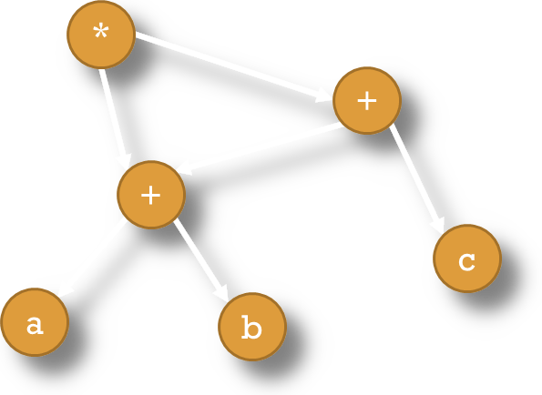

Frank Coelho de Alcantara -2020
Realiza otimizações de Código independente da máquina trabalhando em partes onde não precisamos nos preocupar com registradores, e posições de memória.
O Código Gerado é uma representação simplificada da árvore gerada pela análise semântica. Uma versão limpa, geralmente linear, mas que contém todas as características do algoritmo criado.
Este código intermediário já contém um nível significativo de otimizações.
O código intermediário é, geralmente, independente da arquitetura alvo.
Considere a declaração, $( 𝑎 + 𝑏 )∗ ( 𝑎 + 𝑏 + 𝑐 )$ e construa o DAG equivalente.
Você pode baixar o material de apoio clicando aqui
AHO, A. V. et al. Compiladores: princípios, técnicas e ferramentas. 2º. ed. Boston, MA, USA: Pearson Education Inc. , 2007.
Appel, Andrew W. Modern Compiler Implementation in Java, 2nd ed. Cambridge, 2002. (Editions in ML and C also available; the “tiger books”)
CASS, S. The 2016 Top Programming Languages. IEEE Spectrum, 2016. Disponível em:
Grune, Dick, Henri E. Bal, Ceriel J.H. Jacobs, and Koen G. Langendoen. Modern Compiler Design. Wiley, 2000
Hogg, Jim. CSE-P501 Compilers. Washington University, 2005